١ما هي «سديد»؟
تعمل المنصّة على نموذج تعلّم آلة (LightGBM) دُرِّب على 41,042 طلب موافقة صدر فيه قرار نهائي من شركات التأمين. تُدخل بيانات الطلب المتاحة لديك قبل الإرسال، فتحصل على:
- احتمال عدم الموافقة الكاملة — رقم بين 0% و100%.
- المبلغ المعرّض للخطر بالريال، مبنيّاً على نسب التحصيل التاريخية الفعلية.
- أرجح أسباب عدم الموافقة، ومع كل سبب إجراء تصحيحي محدّد تنفّذه قبل الإرسال.
- تفسير كامل لكل عامل ساهم في القرار — لا صندوق أسود.
لماذا فئتان فقط؟
المنصّة لا تفرّق بين «الرفض الكامل» و«الموافقة الجزئية»، بل تجمعهما في فئة واحدة: «موافقة غير كاملة». السبب عملي بحت — الموافقة الجزئية خسارة إيراد أيضاً: متوسّط ما يُحصَّل منها 49.9% من الفاتورة، مقابل 92.6% للموافقة كاملة. فمن منظور تنمية الإيرادات كلتاهما تستحقّ التدخّل قبل الإرسال.
٢البدء في دقيقة واحدة
- افتح المنصّة
افتح الرابط في متصفّح Chrome:
https://hanihalsulami.github.io/RCM/predict.html
أوّل تحميل يستغرق ثانية أو ثانيتين لأن النموذج يُنزَّل مرّة واحدة. بعدها كل تنبّؤ فوري. - املأ بيانات الطلب الحقول مملوءة مسبقاً بالقيم الأكثر شيوعاً، فغيّر ما يخصّ طلبك فقط. أهمّها: إجمالي الفاتورة، المستشفى، شركة التأمين، رمز ICD-10.
- اضغط «تنبّأ بنتيجة الموافقة» تظهر النتيجة فوراً أسفل النموذج، وتُملأ بقية التبويبات بالتفاصيل.
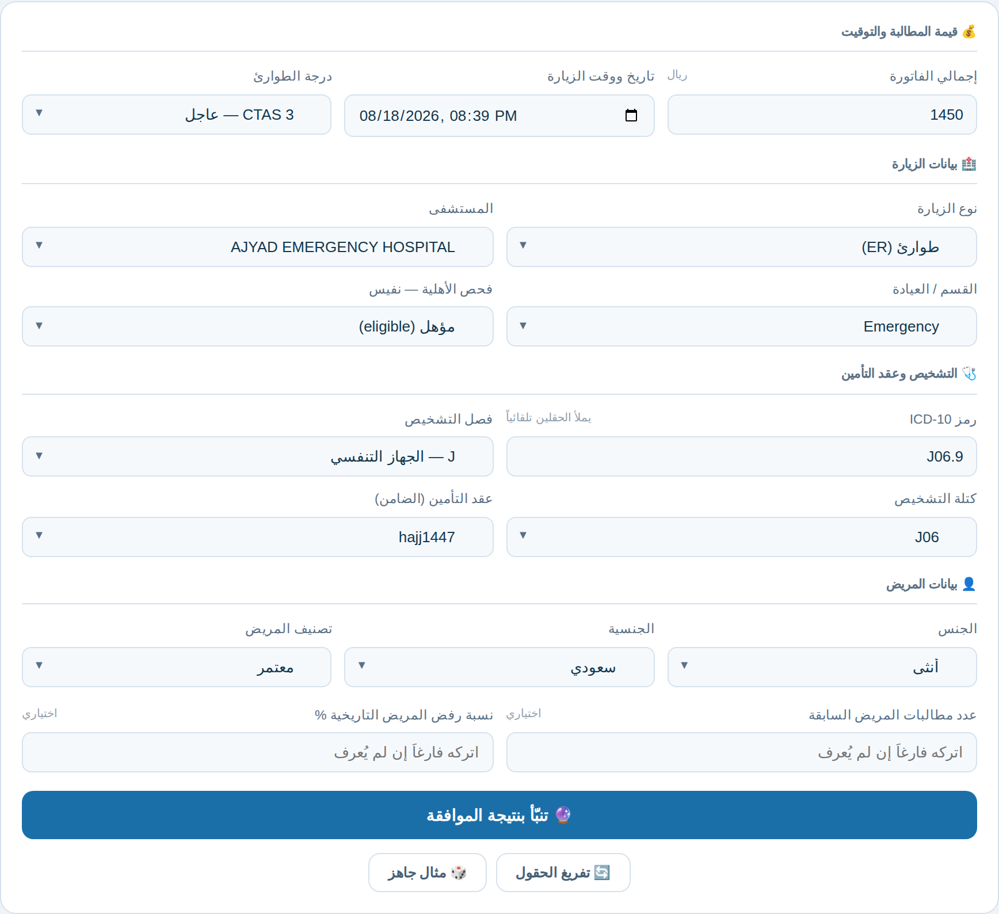
التبويبات الخمسة
| التبويب | ماذا يعرض |
|---|---|
| 🔮 التنبؤ | نموذج الإدخال والنتيجة وأهم العوامل — نقطة البداية. |
| 📊 تفسير SHAP | تفصيل كامل لمساهمة كل عامل في القرار. |
| ⚠️ أسباب عدم الموافقة | الأسباب المرجّحة مرتّبة، مع الإجراء التصحيحي لكل سبب. |
| 🧠 عن النموذج | دقّة النموذج، مقارنة الخوارزميات، حدود الاستخدام. |
| 📈 Power BI | أدوات الدمج في لوحات Power BI. |
٣شرح الحقول
| الحقل | من أين تأخذه | الأهمية | ملاحظات |
|---|---|---|---|
| إجمالي الفاتورة | حقل Total في نظام الفوترة |
عالية | ثالث أقوى عامل (13.7%). أدخله بالريال دون فواصل. |
| عقد التأمين (شركة التأمين — Payer) | Contract Name |
الأعلى | أقوى عامل على الإطلاق (19.7%). اختر من القائمة — 81 عقداً مدرجاً، وابحث بالكتابة. |
| المستشفى | Hospital Name |
الأعلى | ثاني أقوى عامل (17.4%). 20 منشأة. |
| القسم / العيادة | Clinic Name |
عالية | 11.2%. أكثر 61 عيادة تكراراً؛ ما عداها يقع تحت «أخرى». |
| رمز ICD-10 | التشخيص الرئيسي | عالية | اكتب الرمز كاملاً (مثل J06.9) فيملأ حقلَي «الفصل» و«الكتلة» تلقائياً. |
| نوع الزيارة | Visit Type |
متوسطة | طوارئ / عيادة خارجية / تنويم. |
| درجة الطوارئ CTAS | فرز الطوارئ | متوسطة | من CTAS 1 (الأحرج) إلى CTAS 5. مهمّ جداً لطلبات الطوارئ. |
| فحص الأهلية — نفيس | نتيجة فحص NPHIES | متوسطة | مؤهل / خطأ / خارج الشبكة / غير مغطى / بوليصة غير فعّالة. |
| تاريخ ووقت الزيارة | — | متوسطة | مملوء بالوقت الحالي. يؤثّر عبر: الساعة، يوم الأسبوع، الزيارات الليلية. |
| الجنسية · تصنيف المريض · الجنس | ملف المريض | منخفضة | الجنسية 6.3%، تصنيف المريض 2.3%، الجنس 0.2%. |
| سجل المريض السابق | نظام RCM | اختياري | عدد طلبات الموافقة السابقة ونسبة عدم اكتمالها. اتركه فارغاً إن لم تعرفه — لا تخمّن. |
٤قراءة النتيجة
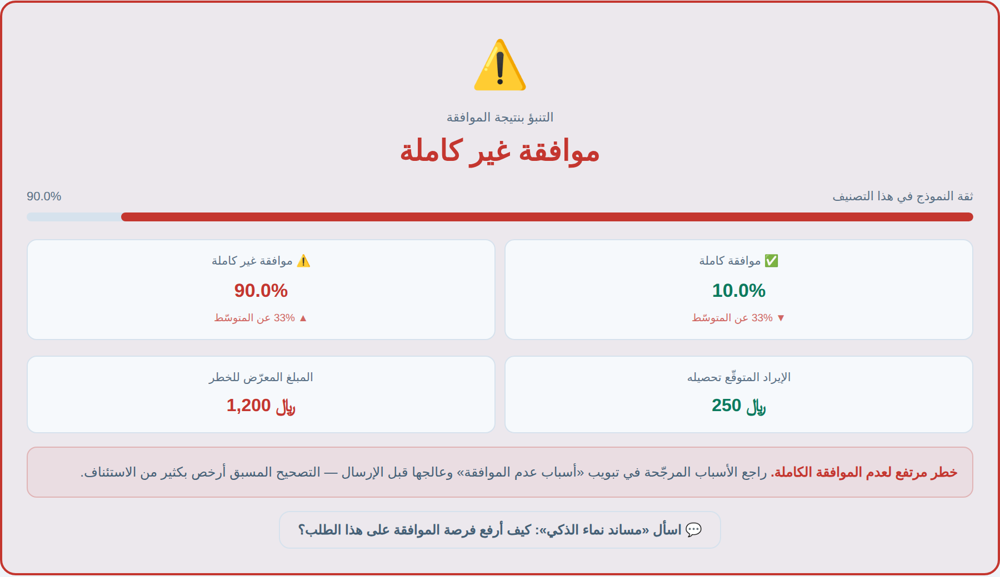
| العنصر | معناه |
|---|---|
| التصنيف (موافقة كاملة / موافقة غير كاملة) |
حكم المنصّة النهائي. يُحسم بعتبة 0.45 على احتمال عدم الموافقة الكاملة — أي أن احتمال 45% فأكثر يُصنَّف «لم تُقبل». |
| شريط الثقة | ثقة النموذج في هذا التصنيف تحديداً. كلما اقترب من 100% كان الحكم أوضح. |
| الاحتمالان | احتمال الموافقة الكاملة مقابل عدمها. تحتهما مقارنة بالمعدّل العام: ▲ 32% عن المتوسّط تعني أن هذا الطلب أخطر من الطلب الاعتيادي بـ 32 نقطة. |
| الإيراد المتوقّع تحصيله | تقدير بالريال، محسوب من نسب التحصيل التاريخية الفعلية (92.6% للمقبولة، 8.8% لغيرها). |
| المبلغ المعرّض للخطر | الفرق بين الفاتورة والإيراد المتوقّع. هذا الرقم هو ما تُجمّعه في لوحة Power BI لقياس حجم الخطر على مستوى شركة التأمين أو المستشفى. |
شرائح الخطر الثلاث
أهم العوامل — نظرة سريعة
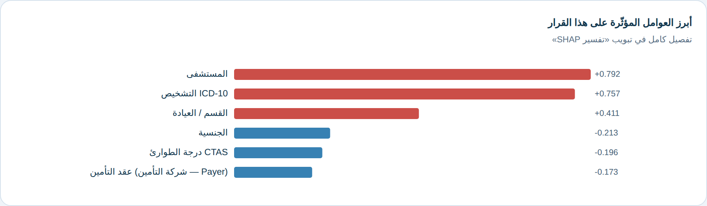
٥أسباب عدم الموافقة والإجراء المطلوب
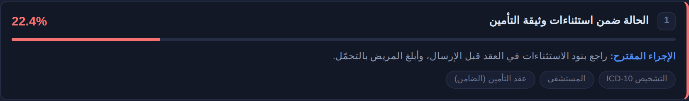
النسب مشروطة بعدم التحصيل — أي أنها تجيب عن سؤال: «إذا لم يُحصَّل هذا الطلب بالكامل، فما أرجح السبب؟» ولذلك يبلغ مجموعها 100% بغضّ النظر عن مستوى الخطر نفسه.
الأسباب الأربعة عشر المعتمدة
صُنِّف 4,844 ردّاً نصّياً حرّاً من شركات التأمين إلى 16 سبباً معيارياً، ويتنبّأ النموذج بأربعة عشر منها (تلك التي تجاوزت 150 حالة). مرتّبة هنا بحسب تكرارها الفعلي:
| # | السبب | الإجراء التصحيحي | الحالات |
|---|---|---|---|
| 1 | نقص في المستندات أو التقارير الطبية | أرفق تقرير الطوارئ والتاريخ المرضي والفحص السريري ونتائج التحاليل. | 3,821 |
| 2 | لا تنطبق معايير الطوارئ | وثّق مؤشرات الحالة الحرجة (العلامات الحيوية وتصنيف CTAS) لإثبات صفة الطوارئ. | 3,649 |
| 3 | خدمات/أدوية العيادات الخارجية غير مغطاة | راجع نطاق تغطية العيادات الخارجية في العقد قبل تقديم الخدمة أو الدواء. | 2,927 |
| 4 | تجاوز حدود أو سقف التغطية | راجع الحد المتبقي في وثيقة المريض، وجزّئ الخدمات إن لزم. | 1,696 |
| 5 | ضمن استثناءات وثيقة التأمين | راجع بنود الاستثناءات في العقد قبل الإرسال، وأبلغ المريض بالتحمّل. | 1,586 |
| 6 | عدم أهلية المؤمَّن عليه | أعد فحص الأهلية في نفيس وتأكد من سريان البوليصة ورقم العضوية. | 1,261 |
| 7 | خطأ في التسعير أو الترميز | راجع التسعير ومطابقة رموز الخدمات مع قائمة أسعار شركة التأمين قبل الإرسال. | 1,010 |
| 8 | سبب آخر غير مصنّف | راجع نص رد شركة التأمين يدوياً وصنّفه ضمن الأسباب المعتمدة. | 983 |
| 9 | عدم كفاية المبرر الطبي | أرفق مبرراً طبياً مفصّلاً يربط الخدمة بحالة المريض ودلائل الممارسة. | 827 |
| 10 | طلب موافقة مكرّر | تحقّق من عدم وجود طلب سابق بنفس رمز الخدمة والتاريخ. | 535 |
| 11 | مقدّم الخدمة خارج الشبكة | تأكد من أن المنشأة ضمن شبكة شركة التأمين، أو احصل على موافقة استثنائية مسبقة. | 487 |
| 12 | تأخّر التقديم أو الإشعار | أرسل طلب الموافقة خلال المهلة النظامية ووثّق تاريخ الإرسال والإشعار. | 414 |
| 13 | التشخيص غير مشمول بالتغطية | تحقق من شمول التشخيص في العقد، وأضف تشخيصاً داعماً إن وُجد. | 301 |
| 14 | موافقة مشروطة بشروط الوثيقة | التزم بالأسعار المتعاقد عليها وحدود الوثيقة عند الفوترة. | 244 |
تحت كل سبب تجد وسوماً رمادية تُظهر العوامل التي دفعت النموذج لترجيحه — مثل «عقد التأمين» أو «التشخيص ICD-10» — فتعرف من أين جاء الترجيح.
٦تفسير SHAP — لماذا قال النموذج ذلك؟
مخطّط الشلال (Waterfall)
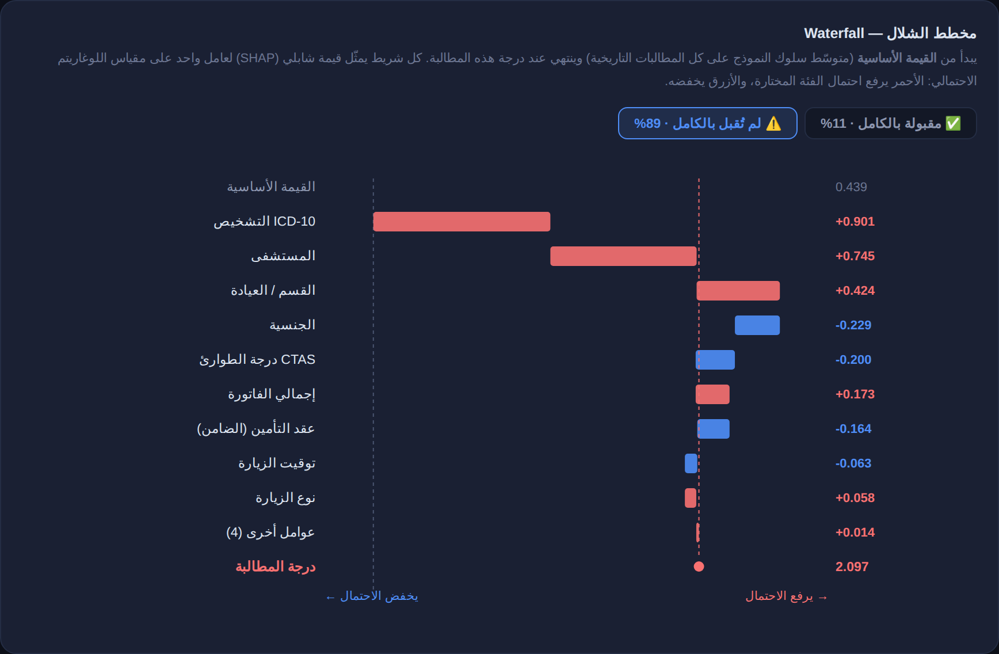
كيف تقرأه؟
- القيمة الأساسية (أعلى المخطّط): سلوك النموذج المتوسّط على كل الطلبات التاريخية — نقطة الانطلاق قبل النظر إلى أي بيان.
- كل شريط عامل واحد. طوله = قوّة أثره.
- الأحمر يميناً يرفع احتمال الفئة المختارة، والأزرق يساراً يخفضه.
- درجة الطلب (أسفل): حصيلة الأساس + كل المساهمات.
- الأزرار أعلى المخطّط تبدّل الفئة المعروضة بين «موافقة كاملة» و«موافقة غير كاملة».
مخطّط القوى (Force)
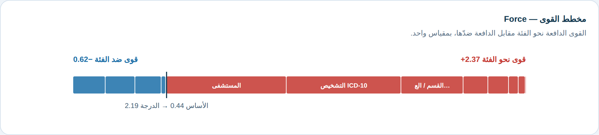
مفيد للعرض السريع على مدير أو على شركة التأمين: يُظهر بلمحة أيّ الجانبين رجَح وبأي قدر. مرّر الفأرة فوق أي شريحة لترى اسم العامل وقيمته.
الأهمية العالمية
أسفل التبويب مخطّط يوضّح ما يعتمد عليه النموذج إجمالاً عبر 4,000 طلب — لا في طلبك وحده. الترتيب الحالي: شركة التأمين 19.7%، المستشفى 17.4%، إجمالي الفاتورة 13.7%، العيادة 11.2%، التشخيص 9.1%.
٧أمثلة عملية
٨الدمج في لوحة Power BI
الطريقة ١ — تضمين الصفحة
في Power BI Desktop: Insert ← Web content، ثم ألصق:
<iframe src="https://hanihalsulami.github.io/RCM/predict.html?embed=1" width="100%" height="900" frameborder="0"></iframe> |
المعامل embed=1 يُخفي الترويسة والتبويبات ويعرض النتيجة وأرجح ثلاثة أسباب
وأهم العوامل في عمود واحد مضغوط.
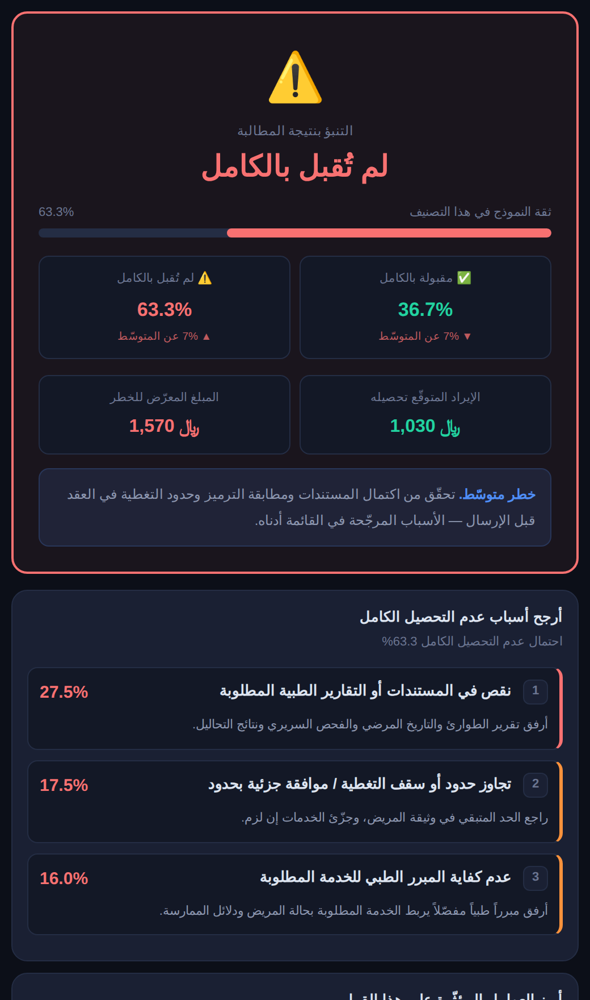
الطريقة ٢ — تمرير الطلب المحدّد
مقياس DAX يبني الرابط من الصف الذي يختاره المستخدم في اللوحة، فتُحدَّث الصفحة وتشغّل
التنبّؤ تلقائياً. المقياس جاهز في powerbi/measures.dax.
الطريقة ٣ — تسجيل دفعي (الموصى بها للوحات)
تُدخل التنبّؤات كأعمدة في نموذج البيانات عبر Get Data ← Python script، فتبني عليها بطاقات ومخطّطات عادية: احتمال عدم التحصيل، شريحة الخطر، المبلغ المعرّض للخطر، أعلى ٣ عوامل SHAP، وأعلى ٣ أسباب متوقّعة لكل طلب.
powerbi/README_POWERBI.md داخل المستودع.
٩سَنَد — من السؤال النظاميّ إلى تحسين الطلب
يبحث سَنَد في ٢٩ مستنداً من لوائح وأنظمة وسياسات مجلس الضمان الصحي (CHI)، ويقدّم إجابته في طبقتين متمايزتين بصرياً — عمداً، كي لا يختلط اجتهادُ العرض بنصّ النظام:
- قراءة مبسّطة واستنتاج — إعادة صياغة الحكم بلغة تشغيلية («على مقدم الخدمة: …»)، وشارات بالمدد والنسب والمبالغ المستخرَجة، وتصنيف كل جملة (إلزام · حظر · شرط · استثناء · إجازة · تغطية · تعريف)، ثم ما يُستنتج من مجموع النصوص.
- النصّ الرسمي منقولاً حرفياً — مع اسم المستند ورقم الصفحة وصورة الصفحة كاملةً قابلة للتكبير.
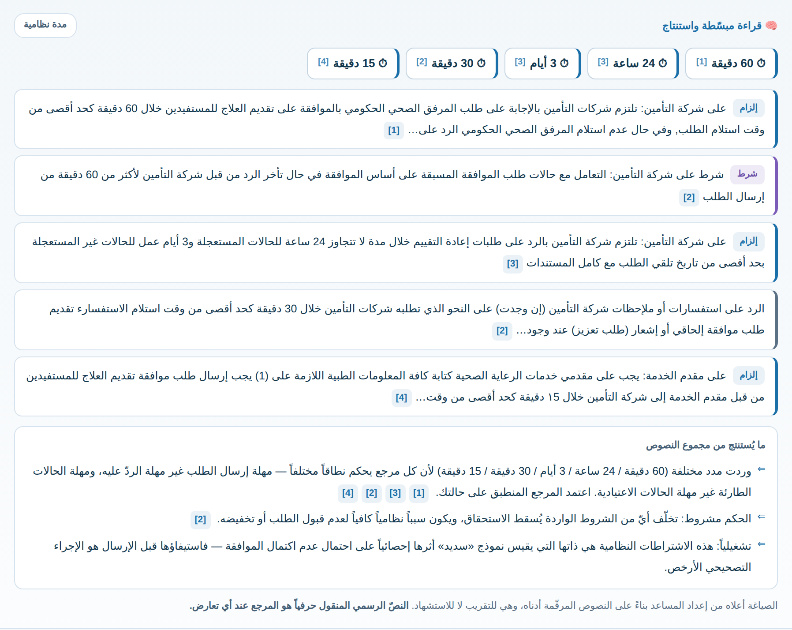
كل جملة في طبقة التحليل تحمل رقم مرجعها [1]، والضغط عليه ينقلك إلى النصّ الذي بُنيت عليه. لا استنتاج بلا أصل معروض.
حوار وتحسين الطلب — الطبقة التوليدية
الوضع الأساسي أعلاه يعمل بلا اتصال خارجي. ومن ⚙ الطبقة التوليدية
داخل الصفحة يمكنك تفعيل التوليد اللغوي، فيصير «سَنَد» محاوِراً: يجيب عن المتابعات،
ويسأل عمّا ينقصه من معطيات، ويبني قائمة تحقّق. وتحكمه قاعدتان:
ما ينقله من اللائحة لا يقوله إلا بعد استرجاعه من الفهرس وبرقم مرجعه [n]؛
وله أن يستكمل من معرفته العامة — شرحاً وسياقاً وممارسات — مع تمييز ذلك صراحةً
بعبارة «من المعرفة العامة» (وتظهر مظلَّلة في الإجابة)، فلا يُنسب إلى اللائحة ما ليس فيها،
والنصّ المسترجَع مقدَّم عند التعارض.
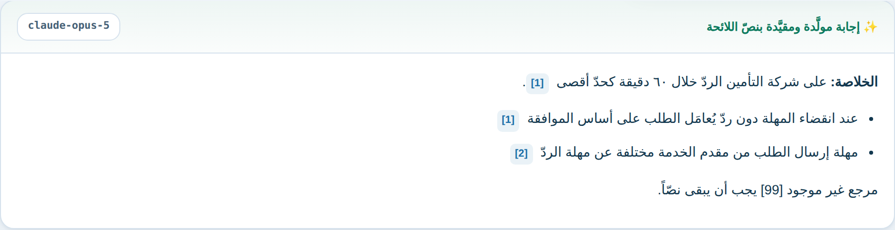
- Anthropic — Claude: مباشرةً بمفتاحك (يُحفَظ في متصفّحك وحده)، أو عبر بوّابة المنشأة الداخلية التي تحمل المفتاح فلا يوجد مفتاح في المتصفّح أصلاً — وهذا هو الوضع الصحيح عند التعميم على فريق.
- Google — Gemini: بمفتاح Gemini (يُنشأ من Google AI Studio) ويُحفَظ في متصفّحك وحده. القواعد نفسها على المزوّدين: الإسناد الإلزامي برقم المرجع لما نُقل من اللائحة، وتمييز المعرفة العامة صراحةً عمّا سواها.
من التنبّؤ إلى الإجراء
بعد تشغيل تنبّؤ في منصّة التنبؤ، يظهر زرّ
💬 اسأل «سَنَد» أسفل النتيجة. اضغطه فتُفتح صفحة المساعد وقد
قرأ حالتك: احتمال عدم اكتمال الموافقة، وأرجح الأسباب، وأكثر العوامل تأثيراً.
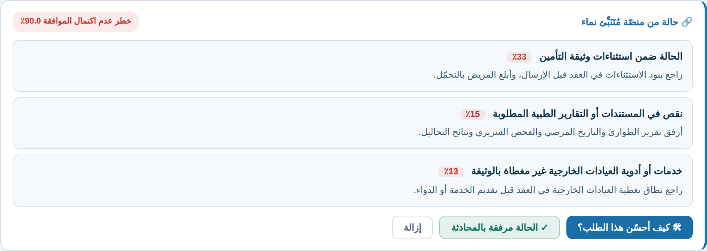
ثم يحوّل كل سبب متوقَّع إلى بند عمل: سؤال تحقّق قبل الإرسال، والإجراء التصحيحي، والنصّ النظامي المنطبق على هذا السبب تحديداً مع صورة صفحته. فينتقل الأمر من «الأرجح أن يُردّ هذا الطلب» إلى «هذا ما ينقصه، وهذا نصّ ما يوجبه النظام».
١٠حدود الاستخدام — ما لا تفعله «سديد»
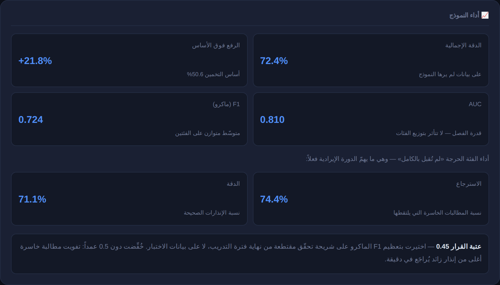
- ليست قراراً طبياً ولا تأمينياً. المنصّة مساعد قرار لفريق تنمية الإيرادات، ولا يجوز إطلاقاً منع خدمة عن مريض أو تأخيرها بناءً على مخرجاتها.
- لا تميّز بين الرفض الكامل والخصم الجزئي. تنذر فقط بأن الطلب لن يُحصَّل بالكامل، دون تحديد حجم الخسارة.
- تخطئ في نحو ربع الحالات. الدقة 72.4% — أي أن طلباً من كل أربعة يُصنَّف خطأً. استخدمها لترتيب الأولويات، لا كحكم نهائي.
- تنذر أكثر مما ينبغي عن قصد. 29% من إنذاراتها زائدة، مقابل التقاط 74% من الحالات الخاسرة. هذه مفاضلة مقصودة لصالح عدم تفويت الخسائر.
- لا تعرف ما لم يكن في بياناتها. عقد أو عيادة أو تشخيص لم يظهر في بيانات التدريب يُعامَل كـ«أخرى»، فيقلّ اعتماد التنبّؤ عليه.
- تتقادم. الأداء يتدهور عند تغيّر سياسات شركات التأمين. أعِد التدريب كل ربع سنة على أحدث البيانات.
- لا تستخدم أي معرّف شخصي — لا اسم المريض ولا رقم هويته.
١١أسئلة شائعة
هل تُرسل بيانات الطلب إلى الإنترنت؟
لا. يُحمَّل النموذج مرّة واحدة عند فتح الصفحة، ثم تُنفَّذ كل الحسابات — بما فيها قيم SHAP — داخل متصفّحك. لا تغادر بيانات الطلب جهازك، وتعمل الأداة حتى بعد قطع الإنترنت ما دامت الصفحة مفتوحة.
لماذا اختفت فئة «الموافقة الجزئية»؟
دُمجت في «موافقة غير كاملة» لأنها خسارة إيراد فعلية (تحصيل 49.9% مقابل 92.6%). جُرِّب البديل — ضمّها إلى «المقبولة» — فرفع الدقة الظاهرية إلى 74.2% لكنه أسقط التقاط الحالات الخاسرة إلى 51.6%، ومرّر 82% من الموافقات الجزئية على أنها «لا خطر».
دقّة 72% — أليست منخفضة؟
الرقم المهم ليس الدقة وحدها بل الرفع فوق الأساس: نسبة فئة الأغلبية 50.6%، فالنموذج يضيف +21.8 نقطة فوق التخمين. كما أن AUC يبلغ 0.810، أي قدرة تمييز جيّدة. والأهم عملياً أنه يلتقط 74% من الحالات الخاسرة قبل إرسالها.
لماذا لا يظهر عقدي أو عيادتي في القائمة؟
القوائم تضمّ الأكثر تكراراً في بيانات التدريب: 81 عقداً و61 عيادة و121 كتلة تشخيص. ما عداها يقع تحت «أخرى / غير مدرج» ويعامله النموذج بالمعدّل العام. إن كان عقدكم كبيراً وغير مدرج، فذلك مؤشّر على الحاجة لإعادة التدريب على بيانات أحدث.
هل أترك الحقول التي لا أعرفها فارغة أم أخمّن؟
اتركها فارغة. النموذج مدرَّب على التعامل مع القيم المفقودة، والتخمين الخاطئ يضلّله أكثر من غيابها. هذا ينطبق خصوصاً على حقلَي سجل المريض السابق.
غيّرت حقلاً واحداً فتغيّرت النتيجة كثيراً — هل هذا طبيعي؟
نعم، خصوصاً في الحقول عالية الأثر: شركة التأمين والمستشفى وإجمالي الفاتورة تشكّل مجتمعةً أكثر من نصف قوّة النموذج. راجع تبويب SHAP لترى بالضبط كم أضاف ذلك الحقل أو خصم.
كيف أعرف أن النموذج مُحدَّث؟
في أسفل تبويب «عن النموذج» تجد تاريخ توليد النموذج. إن مضى عليه أكثر من ثلاثة أشهر فاطلب إعادة التدريب على أحدث البيانات.
هل أستطيع تشغيلها على كل طلبات الشهر دفعةً واحدة؟
نعم. سكربت model/score_batch.py يسجّل ملف طلبات كاملاً ويُخرج
ملف CSV يحتوي على التنبّؤ والاحتمال وشريحة الخطر والمبلغ المعرّض للخطر وأعلى ٣ عوامل
وأعلى ٣ أسباب لكل طلب — جاهزاً للاستيراد في Power BI.
١٢حل المشكلات
| المشكلة | الحل |
|---|---|
| الصفحة تعرض «جارٍ تحميل النموذج…» ولا تتقدّم | حجم النموذج نحو 2 ميغابايت؛ انتظر ثانيتين. إن استمرّ، حدّث الصفحة بـ
Ctrl + Shift + R. إن ظهرت رسالة خطأ حمراء فالملف
model_bundle.js غير موجود — راجع فريق البيانات. |
| أرى نسخة قديمة من المنصّة | تخزين Chrome المؤقّت. اضغط Ctrl + Shift + R لتجاوزه. |
| القائمة المنسدلة لا تُظهر خياري | اكتب في مربّع البحث أعلى القائمة — تُصفَّى بالعربية والإنجليزية معاً. إن لم يوجد، اختر «أخرى / غير مدرج». |
| التبويبات تظهر «شغّل تنبّؤاً أولاً» | تبويبا SHAP والأسباب يحتاجان نتيجة. ارجع لتبويب «التنبؤ» واضغط زرّ التنبّؤ. |
| الصفحة لا تظهر داخل Power BI | تأكّد أن مرئي Web content مسموح في إعدادات المؤسسة، وأن الرابط
يبدأ بـ https. جرّب فتح الرابط في Chrome أولاً للتأكد من عمله. |
| الأرقام تبدو غير منطقية لطلب أعرفه | افتح تبويب SHAP وراجع مخطّط الشلال — سيُظهر بالضبط أي عامل دفع النتيجة. غالباً يكون حقلاً أُدخل خطأً. وإن تبيّن خطأ منهجي، أبلغ فريق البيانات ليُدرَس في دورة إعادة التدريب القادمة. |